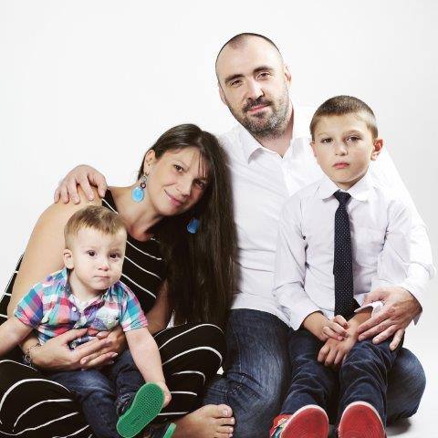

<link rel="import" href="../../bower_components/polymer/polymer.html">
<link rel="import" href="../../bower_components/paper-material/paper-material.html">

<dom-module id="oyloo-landing-page">
  <template>
    <style is="custom-style">
      paper-material {
        @apply(--paper-font-body2);
      }
      
      paper-material .subhead {
        @apply(--paper-font-subhead);
      }
      
      paper-material {
        border-radius: 2px;
        height: 100%;
        padding: 16px 0 16px 0;
        width: calc(98.66% - 16px);
        margin: 16px auto;
        background: white;
      }
      /* Breakpoints */
      /* Small */
      
      @media (max-width: 600px) {
        paper-material {
          --menu-container-display: none;
          width: calc(97.33% - 32px);
          padding-left: 16px;
          padding-right: 16px;
        }
      }
      /* Tablet+ */
      
      @media (min-width: 601px) {
        paper-material {
          width: calc(98% - 46px);
          margin-bottom: 32px;
          padding-left: 30px;
          padding-right: 30px;
        }
      }
      
      img {
        float: left;
        margin: 16px 16px 16px 0px;
        border-radius: 50%;
      }
    </style>
    <paper-material elevation="1">
      <a href="{{baseUrl}}contact"></a>
      <p>Hi, my name is <b>Ed Ilyin</b>. I'm 37 and father of 9, 2 and 1 years old boys.</p>
      <p>Do you want to make a <b>startup</b> but have <b>no spare money and time</b>        like me?</p>
      <p>Let's build best services in the world and <b>earn money</b> all together.</p>
    </paper-material>
    <paper-material elevation="1">
      <h2 class="page-title">How?</h2>
      <ol>
        <li>You donate <b>1 cent</b> as a vote for your prefered <a href="{{baseUrl}}requests">request</a>.
          (Send new requests to <a href="mailto:request@oyloo.com">request@oyloo.com</a>.)</li>
        <br>
        <li><b>I will make the requested changes</b> starting from the <b>most voted</b>.
          (PR's (pull requests) on <a href="https://github.com/Oyloo/oyloo">GitHub</a>          are welcome.)
        </li>
        <br>
        <li>As a result <b>you become co-owner</b> of a service and any <b>profit will be shared with you</b>          proportionally to the amount of your donations.
        </li>
      </ol>
    </paper-material>
  </template>
  <script>
    (function() {
      'use strict';
      Polymer({
        is: 'oyloo-landing-page',
      });
    })();
  </script>
</dom-module>
